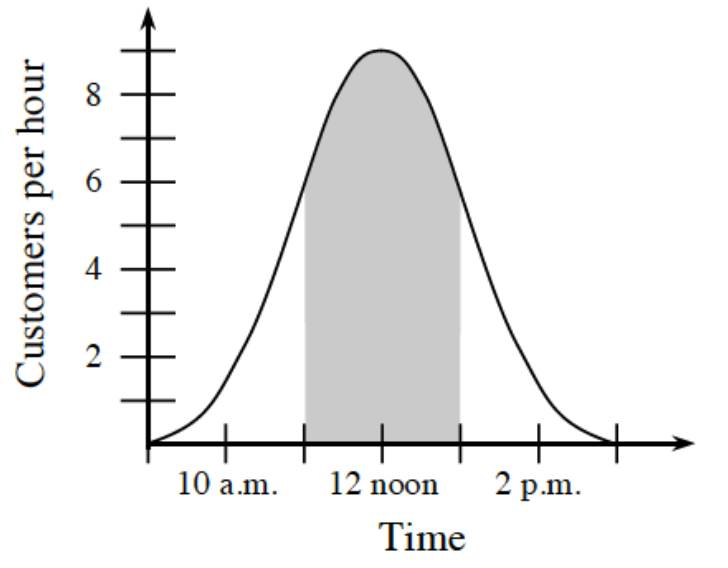

Solve the inequalities below and express the solutions in both interval and inequality notation.
\((1-x)(x-3)(x-5)>0\)
\(x^2-2x-15<0\)
Use polynomial division to rewrite the equation of \(r(x)=\frac{3x^2+x-5}{x-4}\). Then graph the function and describe the end behavior.
Spannoni’s Deli is keeping track of the rate of customers who are served on a typical day.

Why does this graph have this kind of shape?
What does the area shown in the shaded region represent? The interval of the shaded region starts at 11 a.m. and ends at 1 p.m.
Ms. Spannoni thinks that they should hire an extra worker for the lunch rush, 11 a.m. to 1 p.m., if they have over \(16\) customers during that time. Should they hire an extra worker?
Solve each equation.
\(x^3-3x^2-10x=0\)
\(c^4-12c^2-64=0\)
Let \(f(x)=\left\{ \begin{array} { c c c } { x ^ { 2 } } & { \text { for } } & { x < 2 } \\ { 4 } & { \text { for } } & { x \geq 2 } \end{array} \right.\).
Let \(g(x)=f(x)+2\) and \(k(x)=f(x-3)\). Graph the functions \(f\), \(g\), and \(k\) on the same set of axes. Use contrasting colors and label the graphs.
Write explicit equations to represent the functions \(g\) and \(k\). Be sure to change the domain of \(f\) when writing these equations.
Graph each of the following functions and state the equations of the asymptotes.
\(y=\frac{10}{x}\)
\(y=0.5^x\)
\(y=\frac{1}{x+2}\)
\(y=2^x-3\)
For each situation below, write an equation for an exponential function.
Bread costs \(\$1.87\) now and is increasing in price by \(2\%\) each month.
A car is worth \(\$12000\) now and is depreciating in value by \(12\%\) each year.
Bacteria grow at a rate of \(30\%\) every hour. There are currently \(1000\).
A \(\$5000\) investment earns \(1\%\) interest every month.
Write an equation for an exponential function of the form \(y=a\cdot b^x\) that passes through the points \((2,18)\) and \((4,162)\).